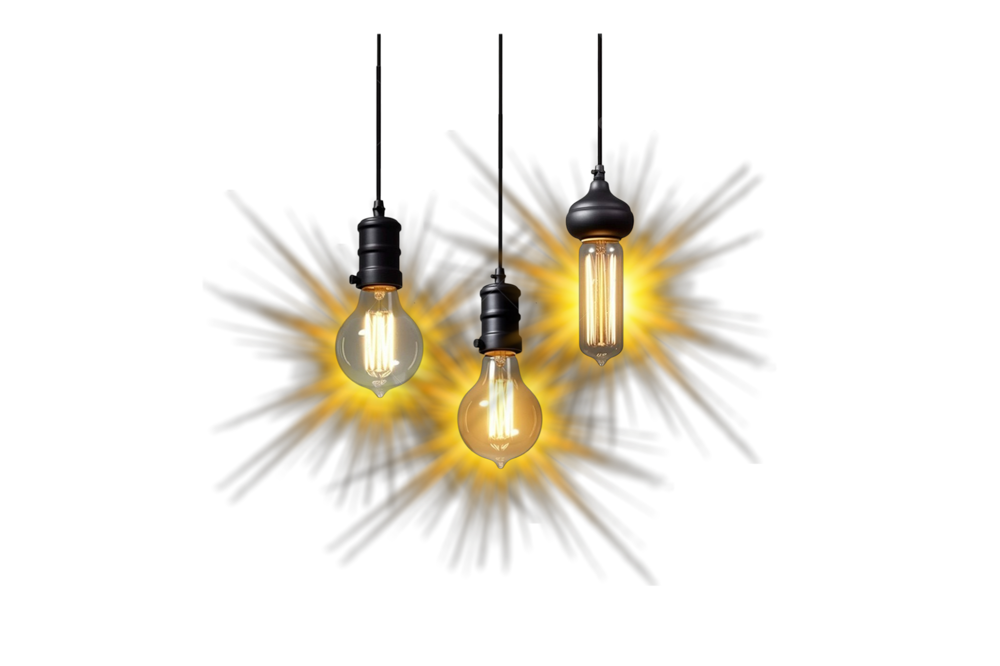
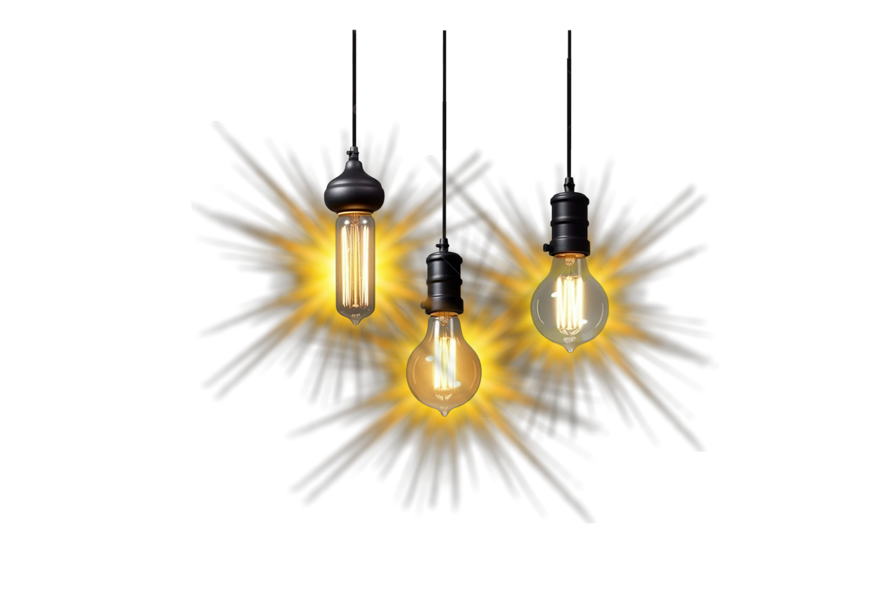

Sobre mim
Olá! Me chamo Rainer Sacks. Nasci surdo aqui no Rio de Janeiro e, graças ao implante coclear, comecei a ouvir pela primeira vez aos 6 anos de idade, há quase 15 anos. Estudei Libras no INES – Instituto Nacional de Educação de Surdos, a primeira escola de surdos do Brasil. Sou apaixonado por investimentos, atividades físicas e práticas desafiadoras como Krav Maga, CrossFit, adestramento canino e trilhas por diferentes estados do Brasil. Desde criança, sempre fui aventureiro: já fiz rapeis, escaladas, tirolesa com quase 5 quilômetros de extensão e até um mergulho no mar, com cilindro, para explorar o fundo do oceano. Atualmente, estou cursando Engenharia de Software. Escolhi essa área porque sempre gostei de resolver problemas, criar soluções úteis e entender como a tecnologia pode impactar o mundo de forma positiva. Apesar dos desafios da minha trajetória, sempre busco aprender com foco e persistência. Tenho interesse especial por cibersegurança, arquitetura de software e projetos que exijam lógica e criatividade. Estou começando minha jornada profissional com dedicação e vontade de crescer na área de TI.
Conhecimentos
É o começo
Projetos
Desenvolvi algumas páginas em HTML conforme solicitado pelo professor, com o objetivo de treinar e praticar. Você pode acessá-las clicando nos links abaixo para ver o que fiz:
- Projeto 1: Cartão de série
- Projeto 2: Cartão criativo
- Projeto 3: Mini site
- Projeto 4: Player de Música
Histórico acadêmico
 - Ensino médio completo (2024) - Colégio Adventista Da Tijuca
- Olimpíada Nacional Das Ciências - Medalha de ouro
- Graduação em Engenharia de Software - Instituito INFNET (2025 - atual)